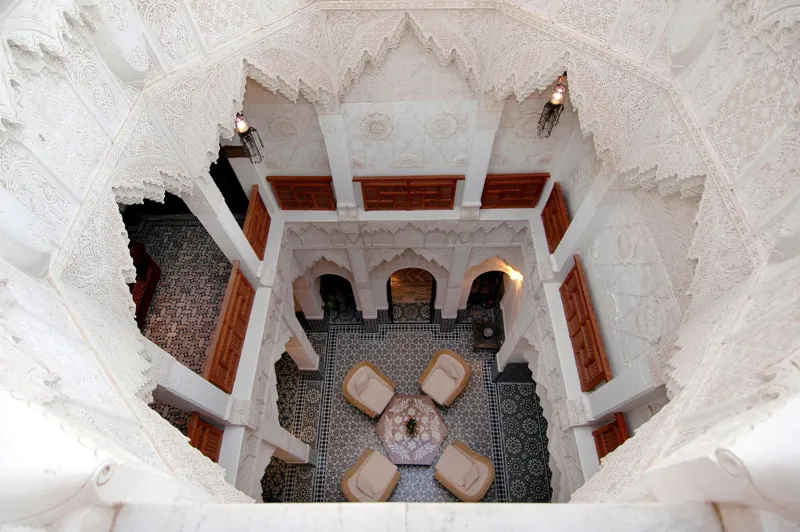
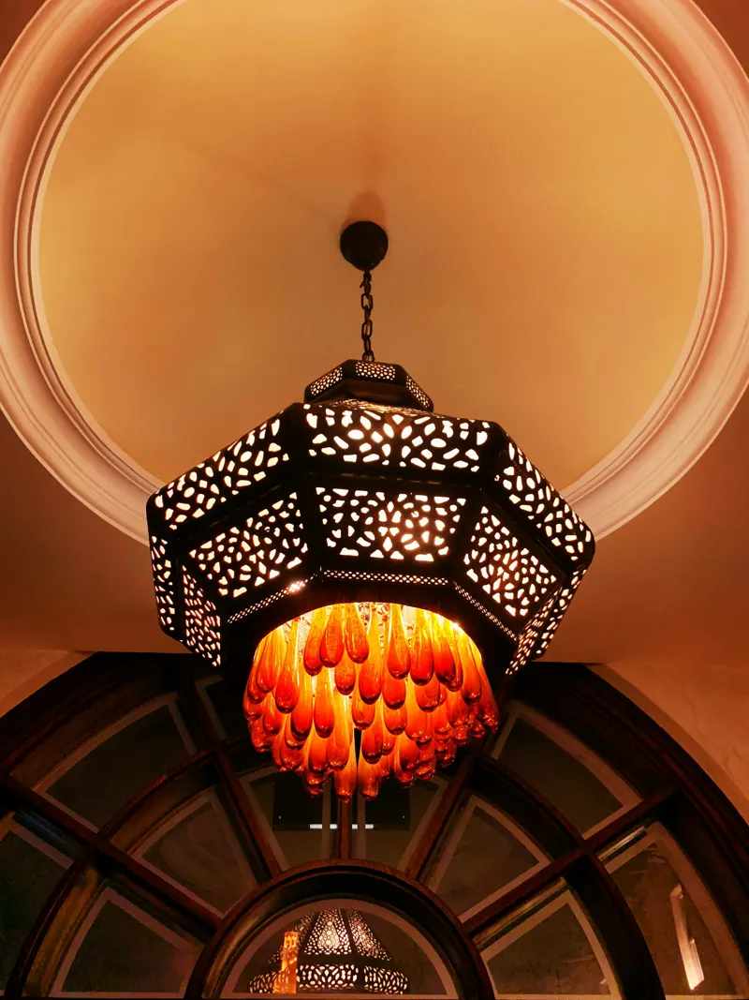
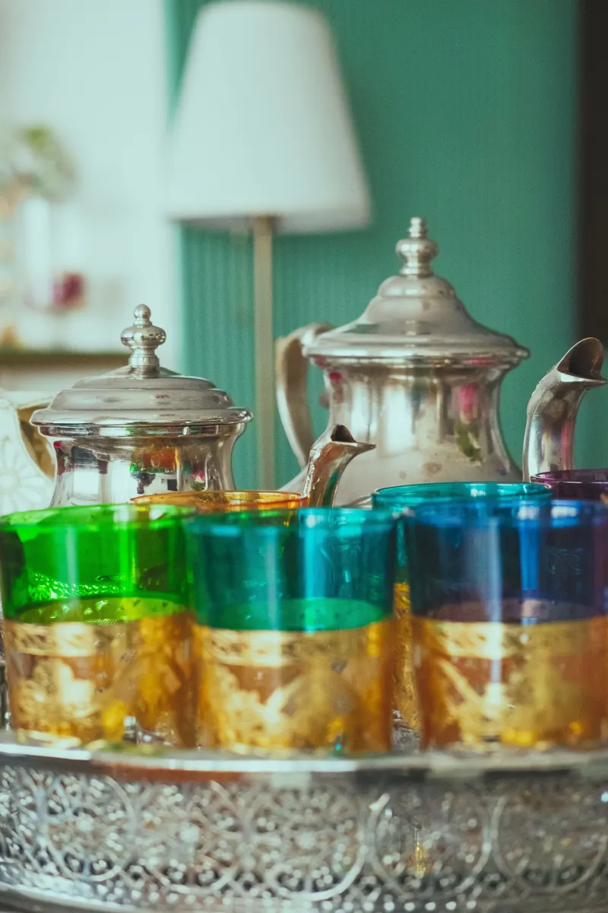
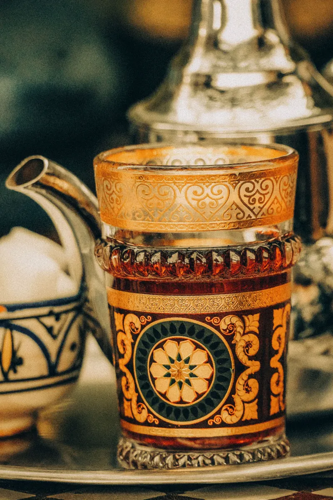
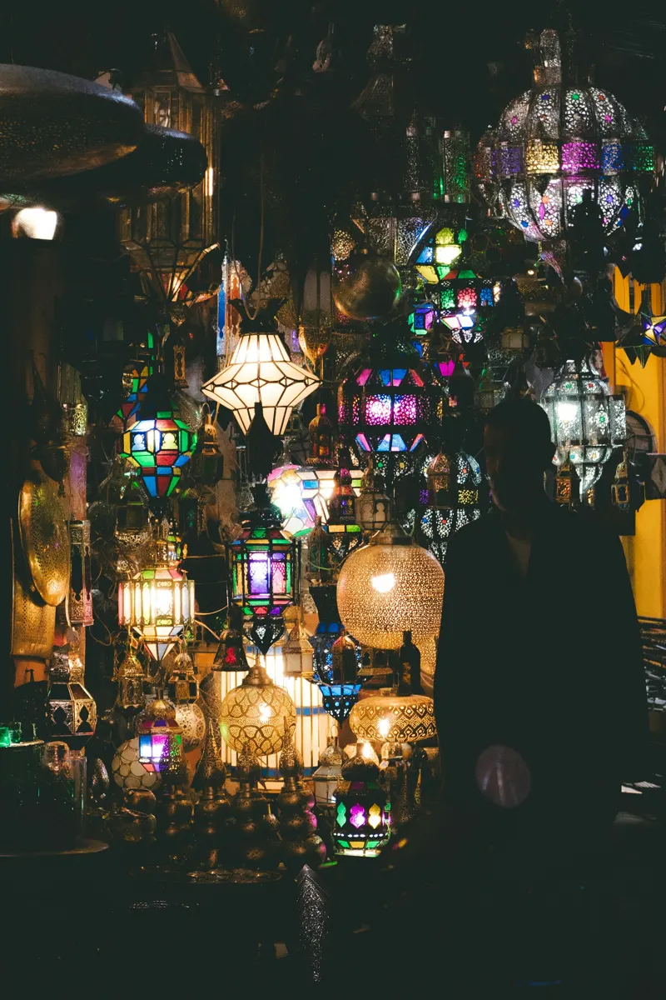
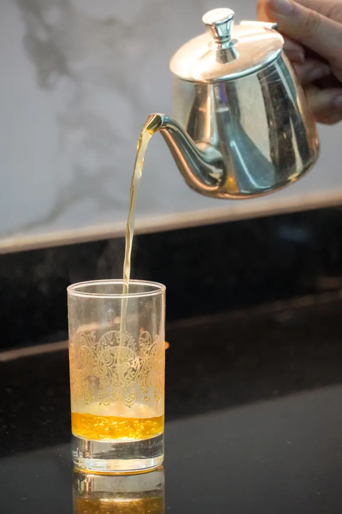
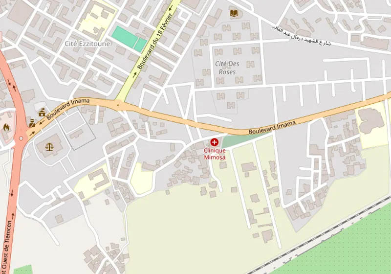

Tajines & couscous
Les plats qui font la fierté de la maison. Le couscous se commande la veille.
Cuisine traditionnelle · Imama, Tlemcen
Hrira, pastilla, tajines et couscous dans un décor d’arabesques dorées, au cœur d’Imama.
4,0/5725 avis GoogleLa maison
Au 78 Lotissement Korso, boulevard Imama, le Restaurant Marrakech sert surtout une cuisine traditionnelle algérienne et tlemcénienne, dans une salle aux arabesques dorées.
Couscous et tajines font la fierté de la maison, avec la hrira, la pastilla et le méchoui. Le couscous se commande la veille.
Excellent traditional food, very tasty. Beautifully furnished, friendly atmosphere. Very clean.
— Avis Google, 2024


Les plats qui font la fierté de la maison. Le couscous se commande la veille.
La soupe et le feuilleté traditionnels, pour commencer le repas.
Deux services chaque jour, et le soir seulement le vendredi.
Une ambiance calme et familiale, une équipe aux petits soins.
La carte
Pour commencer : la hrira, la pastilla et des salades variées.
Les tajines et les grands plats de la maison.

Pour finir le repas : le thé à la menthe.
Carte à venir : les tarifs détaillés seront publiés ici. En attendant, appelez-nous. 0674 82 27 11
Ambiance


Le thé à la menthe,
pour finir le repas
The receptionists and servers are super friendly. The atmosphere is incredible; the restaurant is so beautiful. The food is so delicious. 100% recommended.
Avis Google · 2024Beautifully decorated restaurant and good atmosphere to have a nice quiet dinner. The staff is extremely friendly. I really liked their bastilla and tajine hlou.
Avis Google · 2023Beautiful atmosphere, delicious food and brilliant service. Perfect place to have a bite of traditional food.
Avis Google · 2025Extraits d’avis publiés sur Google, reproduits tels quels (en anglais dans le texte).
Réserver
Choisissez le jour, le service et le nombre de couverts : nous vous rappelons pour confirmer. Pour un couscous, réservez la veille.
Une question ? Laissez-nous un message, ou appelez directement le 0674 82 27 11.

Horaires & accès
Horaires indiqués sur la fiche Google Maps (heure d’Algérie), à confirmer. Le couscous se commande la veille.

© OpenStreetMap